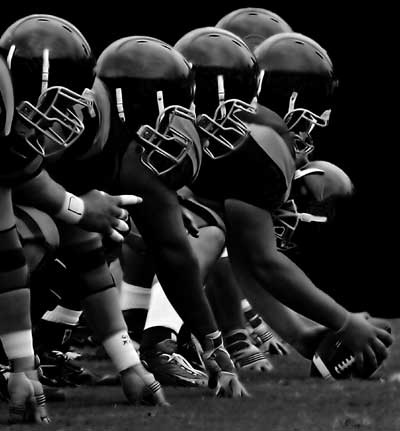
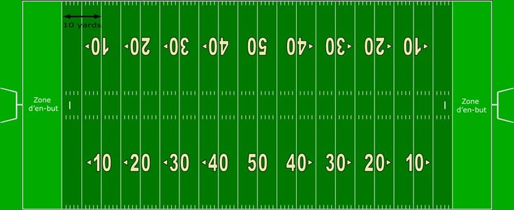
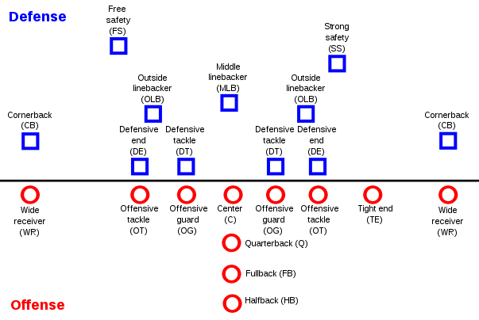

Le Football Américain est le sport national aux États-Unis. Et pourtant, c’est un sport peu connu et pratiqué en France. Peut être parce qu’il reste très peu compris…
Voici donc une introduction au football US ! Nous allons t’expliquer le plus simplement possible les règles de base de ce sport made in America. Ça peut servir si tu as un jour la chance de te rendre à un match de la NFL (ligue des meilleures équipes aux USA), ou si tu souhaites suivre le Superbowl pour autre chose que ses publicités d’anthologie et le spectacle de la mi-temps !
Comme dans beaucoup de sports, le but du jeu est de marquer le maximum de points dans le camp adverse en un temps prédéfini. En l’occurrence, ce camp s’appelle «End Zone» ou «en-but» en français. Situé à chaque extrémité du terrain, c’est à cet endroit que sont marqués les fameux Touchdowns (en vert pâle sur le schéma).
Le terrain est marqué par des lignes espacées de 10 yards (1 yard = 91 centimètres) permettant de mesurer l’avancement des joueurs pendant le match (expliqué plus bas). Il est aussi divisé en deux au niveau de la ligne de mêlée des 50 yards, aussi appelée «scrimmage line«. Deux poteaux en forme de «Y» sont plantés sur la ligne extérieure de chaque end zone.
Le terrain mesure 100 yards de long (soit 91,4 mètres) + les deux zones d’en but, contre 160 pieds de largeur (soit 48,8 mètres).
Ces 6 points peuvent ensuite être complétés par un bonus en tirant le ballon au pied entre les poteaux (=1 point) ou en essayant de pénétrer à nouveau dans l’End Zone en une action (=2 points).
Chaque équipe a 11 joueurs sur le terrain pendant un match. Mais l’originalité de ce jeu est justement que ces 11 joueurs varient selon les phases de jeu. En effet, si l’équipe joue en attaque, les 11 joueurs présents sur le terrain ne seront pas les mêmes que si elle joue en défense. De nombreuses rotations sont donc effectuées entre les groupes offensifs et défensifs de chaque équipe, et les deux ne sont jamais présents en même temps sur le terrain. C’est une sacrée spécificité de ce sport : certains joueurs de l’équipe ne jouent en fait jamais ensemble !
Une équipe de football américain peut comporter jusqu’à 53 joueurs, en incluant les remplaçants qui peuvent intégrer un des deux groupes durant n’importe quelle rotation. Voici comment sont réparties les deux équipes qui s’affrontent selon leur groupe :
Un match de football américain se divise en 4 quart-temps de 15 minutes. Mais un match dure en réalité bien plus longtemps, car comme au basketball, le temps de jeu est effectif et toute interruption stoppe automatiquement le chronomètre. Ainsi, si la durée effective de jeu est de 1 heure, un match dure en général plutôt 3 heures entre la mi-temps de 20 minutes et les rotations qui ont lieues entre chaque quart-temps entre les équipes défense et attaque.
Une mise en jeu ou «kickoff» a lieu au début du premier et du troisième quart-temps, il s’agit de tirer le ballon au pied le plus loin possible dans le camp adverse. Le joueur adverse qui l’a ensuite rattrapé et remonte le terrain devra être plaqué par ses adversaires. Le point de plaquage déterminera d’où démarre la phase de jeu.
Le but est ensuite pour l’équipe en possession du ballon (et donc en attaque), de remonter le terrain pour aller mettre le ballon de football US dans l’End Zone, ou de bien se placer pour tenter un Field Goal.
Mais si c’était simple, il y a longtemps que nous aurions compris comment ce sport fonctionne ! En effet, la subtilité du jeu réside dans un des points cruciaux du football américain : les «downs». Lorsqu’une équipe a le ballon, elle a droit à 4 downs (action avant plaquage) pour avancer d’au minimum 10 yards (un peu plus de 9 mètres). Si elle réussi, alors elle a droit à une nouvelle série de 4 downs, sinon le ballon passe au camp adverse.
C’est pour ça que regarder un match de football US peut parfois paraitre très long, et c’est aussi pour ça que beaucoup d’animations accompagnent ce sport (pom-pom girls ou «cheerleaders» en anglais, fanfares, etc…).